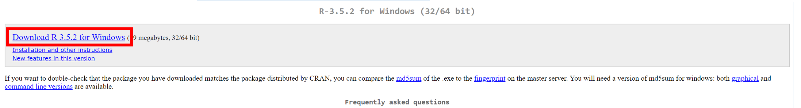
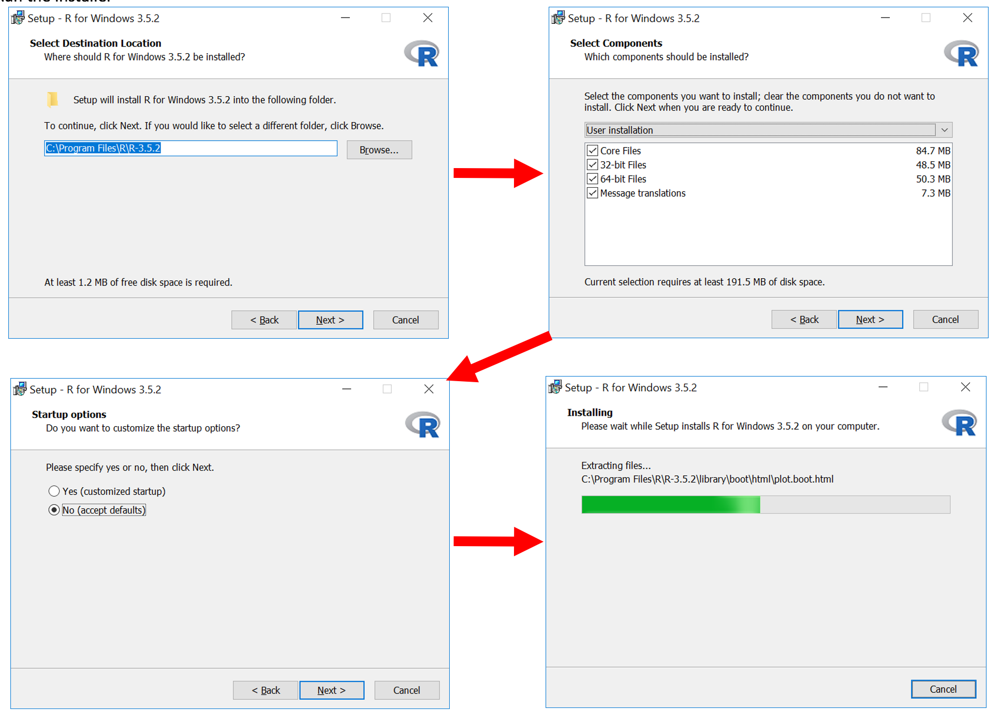
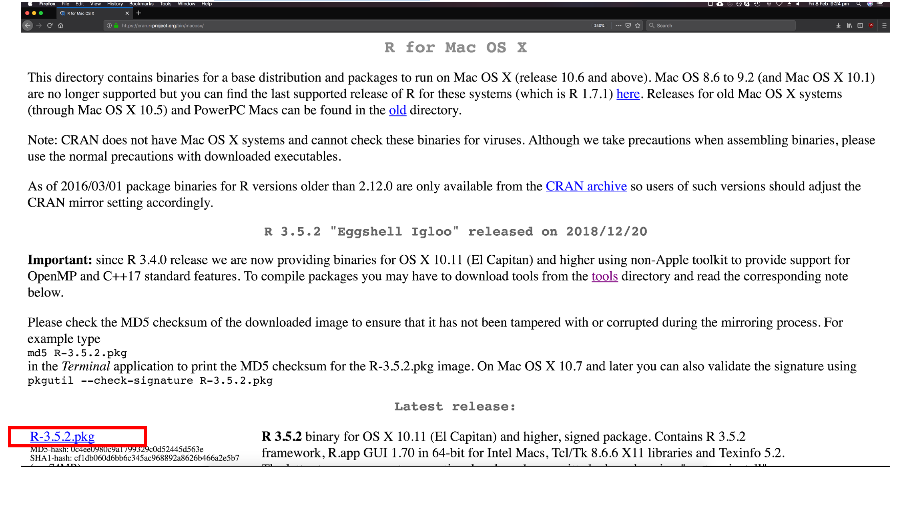
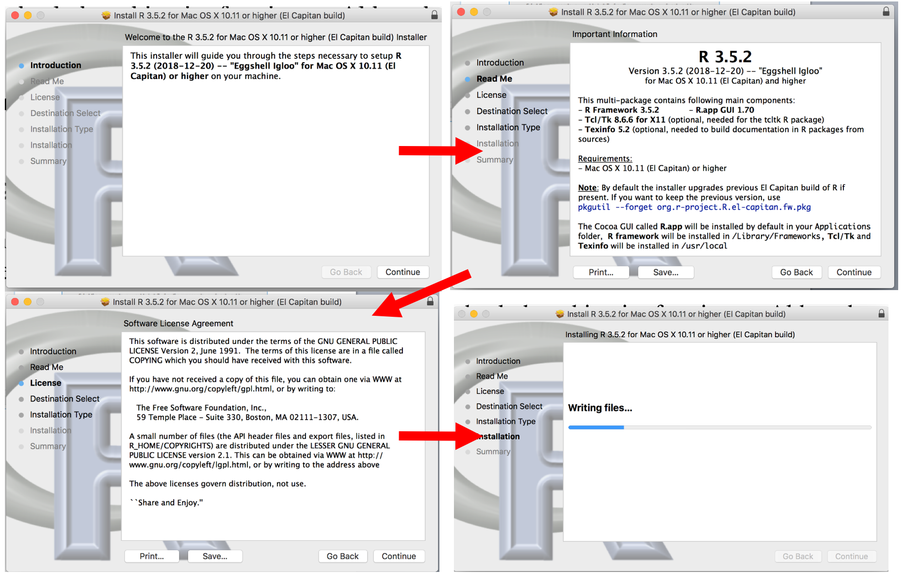
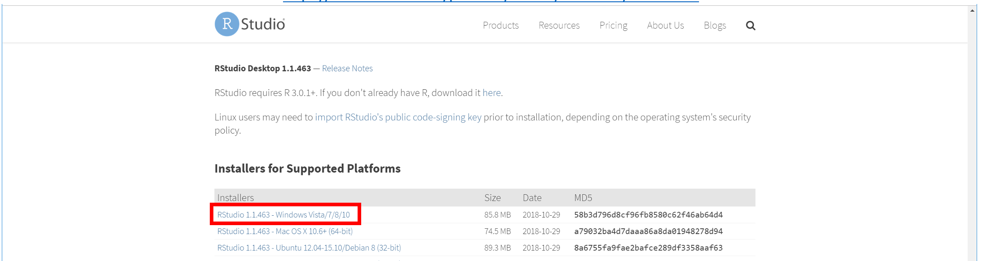
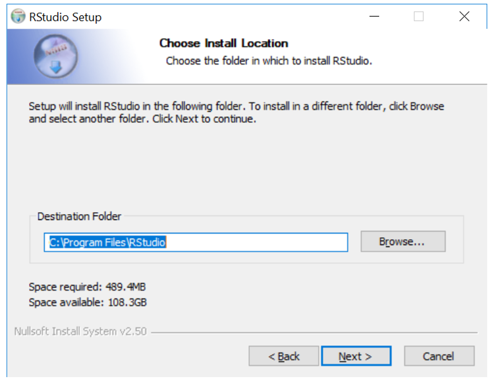
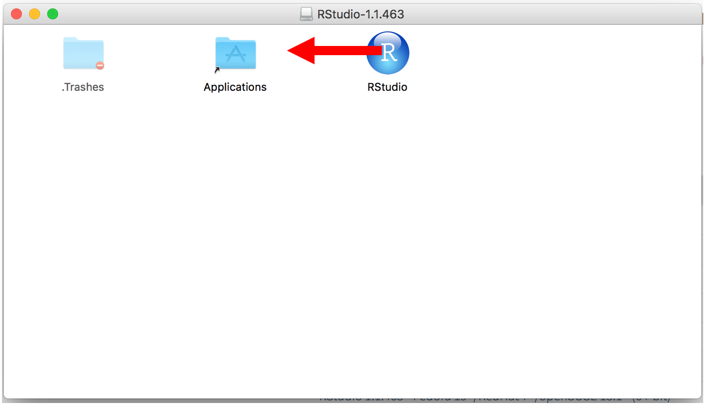
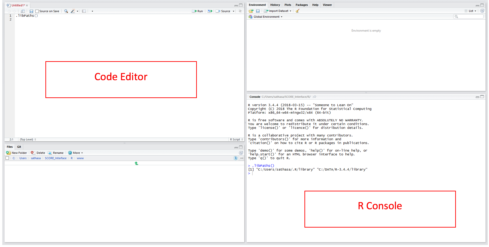

Setting Up R#
By YAP and YDAWG members.
This document will help you to get ready with R. Original version as a Word document can be found here.
Step 1 – Install base R#
Windows#
Download the Windows R installer from https://cran.r-project.org/bin/windows/base/

Run the installer

MacOS#

Run the installer

Step 2 – Install RStudio#
RStudio is an open source development environment for R. It adds functionality to make R coding easier and faster.
Download the RStudio installer from https://www.rstudio.com/products/rstudio/download/#download (Windows marked in red, use the one below for MacOS.

Install RStudio (Windows)

Install Rstudio (MacOS) 
Step 3 – Setup package installation location#
Open RStudio

Packages are additional functions and tools that extend R’s functionality. They are critical to making full use of R and RStudio.
Step 4 – Install the packages#
You may now run code or commands by typing it into editor and using Ctrl+Enter to run, or directly into the R console and pressing Enter.
The
install.packagescommand will download and install R packagesPackages that require other packages will install all dependencies at once
Run
install.packages(<<package name>>)for each of the packages listed above → This will download and install the packages into your libraryFinally, run the
library(<<package name>>)command to load the library into your R session
You can use the sessionInfo() command to list out the packages your R session has attached.